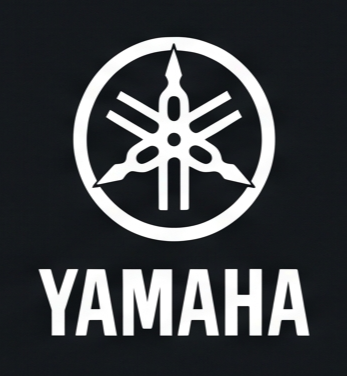
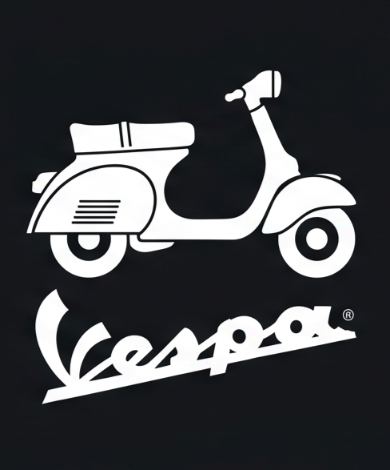

RIDING TELEMETRY
68
KM/H
ODO 78,031 KM
Oli Mesin Kering
Telat servis 480 km
BAHAYA
V-Belt CVT Putus
Melewati batas 20.000 km
MOGOK
Vario 125
78,031
KM
Update Odometer
PARTS
LOG
PERINGATAN TELEMETRI FXON
Oli mendekati batas • Kampas rem melewati batas aman!
Oli Mesin
Int: 2,200 km • Last: 76,304
473
KM LEFT
⚠️ SERVICE DUE SOON (≤ 50 KM)
Replace
Remove
Oli Gardan
Int: 7,840 km • Last: 76,304
6,113
KM LEFT
Replace
Remove
Kampas Rem Belakang
Int: 15,000 km • Last: 73,135
10,104
KM LEFT
🚨 OVERDUE • MELEWATI BATAS AMAN
Replace
Remove
GARAGE // VEHICLES
UNIT / PLATE
ODOMETER
Vario 125
MOTOR HARIAN
D 2618 JZ
78,031 km

NMAX 155
MOTOR TOURING
B 4921 TZX
24,150 km

Vespa Sprint
MOTOR KELUARGA
F 3810 AA
8,420 km
Register new vehicle
Vario 125
78,031
KM
PARTS
LOG
TOTAL MAINTENANCE COST
Rp 685.000
ALL TIME ∨
✓ RIWAYAT SERVIS TERCATAT RAPI • HARGA JUAL TERJAGA
Oli Gardan
AUG 14, 2026 • BRAND // HONDA
EXPENSE // Rp 18.000
76,304
AT SERVICE
Oli Mesin
AUG 14, 2026 • BRAND // SHELL 10W-30
EXPENSE // Rp 65.000
76,304
AT SERVICE
Oli Mesin
JUN 14, 2026 • BRAND // SHELL 10W-30
EXPENSE // Rp 65.000
74,906
AT SERVICE
WORKSHOP
& DIRECTIVE.
Locate Nearby Mechanics
Opens external Google Maps application
AHASS Resmi Sinergi
0.8 KM • Buka • 4.9★
MotoCare Pro Garage
1.4 KM • Spesialis Matic
Navigasi Instan Google Maps
1-Klik Rute ➜
FXON
Track the Wear.
Master the Ride.
Coba Gratis Sekarang
Google Play
App Store
Lagi kenceng-kencengnya
motor mendadak
MATI TOTAL?!
Kalo udah mogok begini
siap-siap
dompet lu JEBOL!
Jangan tunggu mesin jebol
Kenalin
FXON
Sekali klik update odometer
sisa KM
terhitung otomatis
Oli kritis? Kampas rem tipis?
FXON kasih
sinyal waspada
Peringatan merah darurat
sebelum
motor rontok di jalan
Punya lebih dari satu motor?
Masukkin ke
satu garasi digital
Semua riwayat servis rapi
harga jual motor
tetap tinggi
Mau servis sekarang?
bengkel resmi terdekat
ketemu 1-klik!
Saatnya kuasai motormu
tanpa tebak-tebakan
Pause
Restart
0.00s